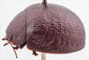
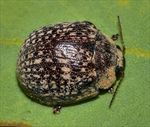
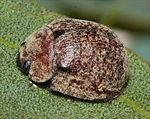
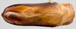
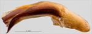
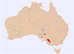

Click on images to enlarge
{kind=link}

Male, Murrayville, Victoria
{kind=link}

Female, Loxton, South Australia
{kind=link}

Male, Mitalie, Eyre Peninsula, South Australia
{kind=link}

Aedeagus, dorsal view (Murrayville, Victoria)
{kind=link}

Aedeagus, lateral view (Murrayville, Victoria)
{kind=link}

Distribution
Name
Trachymela sp. Ta76
Reference specimen
2017-061, Alawoona, South Australia.
Adult Description
Length: ♂ 7.7–9.0 mm (n=7), ♀ 8.5–9.3 mm (n=11).
Colouration:
- Head: mid- to reddish-brown, some black colouration often present on clypeus, sometimes along fronto-clypeal suture, more often over most or all of clypeus, rarely extending posteriorly into frons, labrum usually paler or straw-brown, mandibles dark-brown with black tips; antennomeres 1–4 straw-brown or light-brown, 5–11 grading to usually much darker (even black), rarely slightly darker distal antennomeres, individual antennomeres, particularly 5–7, often with distal extreme darker and/or anterior edge darker.
- Pronotum: brown, concolorous with head, with lateral margins and anterior margin behind eyes sometimes fully or partially and narrowly edged in black.
- Scutellum: most commonly completely dark-brown or black, less often dark-brown or black in a broad band around edges with centre a slightly lighter shade.
- Elytra: brown, concolorous with or fractionally paler than pronotum, usually irregularly speckled throughout with small and fractionally darker areas (that coincide with elevations), elytral suture and anterior edge narrowly black, punctures dark-brown, humeral callus concolorous with or fractionally darker than surrounds.
- Venter & Legs: head very dark brown or black, thoracic ventrites and legs dark-brown or reddish-brown, abdominal ventrites similar, inside surface of elytral epipleura black.
- Cuticular Wax: light-brown and unevenly distributed, with a thick coating on head and the lateral margins of pronotum; on the elytra, it is present as small, semi-rectangular patches that are aligned in about 8 longitudinal rows in the discal area (appearing as regularly spotted from a distance) with a more continuous, light scattering in marginal area, less often the wax is more uniformly distributed with barely or not at all obvious longitudinal streaks.
Morphology:
- Shape: surface evenly curved, quite evenly rounded and almost hemispherical (H/BL: ♂ 0.43–0.52, ♀ 0.48–0.53), highest point at or just a little in front of middle of elytral margin.
- Head: punctures moderately sized (pd ≈ 2–2.5× ef) and quite evenly and densely distributed. Antennae moderately long (AL/BL: ♂ 41–44%, ♀ 35–37%), A4 < A3, filiform.
- Pronotum: almost evenly curved transversely, foveal depression absent or very weak, central elevation absent or barely discernible, puncturation clearly impressed, similar in size but slightly less densely distributed than those on head, sometimes slightly uneven in size, relatively evenly distributed and becoming much coarser at lateral margins. Front margins join lateral margins in a smoothly rounded right-angle, with lateral margin curving smoothly and gradually towards the much thicker rear margin.
- Scutellum: uneven and unpunctured or sometimes with just a few shallow punctures.
- Elytra: punctures distinct and relatively evenly distributed even towards apex, with much smaller punctures scattered on the interstices, some interstices expanded into very shallow verrucae that are no larger than about 2–3 pd and produce an uneven elytral surface, interstices rarely form thin, longitudinal, slightly elevated ridges, surface continuous under humeral callus. Vertical extension of epipleura considerable (HCE/PW = 0.36–0.39).
- Venter: prosternal process narrow anteriorly or, rarely, almost parallel-sided, closed anteriorly, short setae present sparsely over prosternal process and mesoventrite, a single seta on anterior and median trochanter; front edge of metaventrite beveled, truncate; inner edge of epipleura sparsely setose posteriorly, as far forward as anterior edge of 4th abdominal segment.
Male Genitalia (Aedeagus):
- Dimensions: moderately long (LPE = 34–37% BL).
- Dorsal view: shaft narrowing very slightly and smoothly from base towards middle then broadening again to the widest point about 10–15% from apex before the sides converge gradually towards apex in a smooth arc, dorsal surface smoothly curved with short dorso-median channel, dorsolateral channels converge slightly at rear to form a large ostial region, tip protruding slightly, ostial opening large.
- Lateral view: shaft curved at about 45° slightly past basal sulcus, then almost straight to about 15% from apex where ventral surface curves through about 45° and its thickness decreases towards apex, tip small and deflexed.
Immature Stages
Unknown.
Similar species
- Ta91: very similar in shape and size to Ta76, but its elytral surface is more finely reticulated, lacking verrucae that are more than elevated interstices. Its elytral suture is not black and the brown cuticular wax is quite evenly and lightly distributed over the elytral surface and usually lightly spotted with small dots of grey cuticular wax that may vaguely align in longitudinal rows.
- Ta117: very similar also, with verrucae that are quite similar in size and distribution to those of Ta76. It differs in the cuticular wax being a thin and somewhat uneven brown layer spotted (often faintly) with longitudinal rows of greyish colour. Ta117 often has areas of black on the elytra, a broad black band along the elytral suture from scutellum to the highest point is often present, while the centre of disc is black on some specimens. The elytral suture posterior to highest point is not black.
- Ta124:
- Ta78: similar in size and shape to Ta76, but lighter-brown in colour and the elytra with longitudinal rows of small, black verrucae.
- Ta139: differs by lacking the shallow elytral verrucae that are always present on Ta76. The greyish patches of cuticular wax are small and generally much less regularly arranged in Ta139.
Notes
- Taxonomy: Ta76 is one of a group of relatively large and almost hemispherical species (alta group) found in the mallee regions of southern Australia. It is distinguished by its inconspicuous verrucae (only very slightly elevated, concolorous with the elytral surface and smoothly rounded, appearing more as an unevenness of the elytral surface) and distinctive cuticular wax (distributed as 8 or so longitudinal rows of small, roughly rectangular flecks over the elytral disc). The inner edge of the inside face of the epipleura are setose, but they tend to be in a less regular arrangement than in other species with these setae and could easily be overlooked.
- Distribution & Abundance: Distributed in the mallee regions of southern Australia (South Australia, Victoria).
- Host Associations: Recorded from mallee eucalypt species, including Eucalyptus incrassata and E. viridis. Records fromVictoria on E. foecunda by P.G. Kelly are clearly in error, as that species is found only in Western Australia.
Copyright © 2026. All rights reserved.